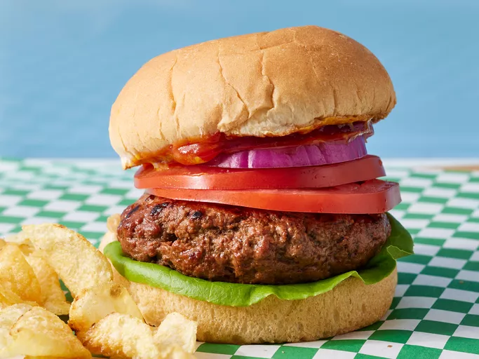

Home
Delicious Grilled Hamburgers

Description
These grilled burgers are tender and juicy with a smoky flavor. Serve on buns with your favorite toppings.
ingredients
- 1 pound lean ground beef
- 1 tablespoon Worcestershire sauce
- 1 tablespoon liquid smoke flavoring or less to taste (Optional)
- 1 teaspoon garlic powder
- 1 tablespoon olive oil
- seasoned salt to taste
Steps
- Gather the ingredients.
- Preheat an outdoor grill for high heat and lightly oil the grate.
- Combine ground beef, Worcestershire sauce, liquid smoke, and garlic powder in a medium bowl; lightly mix until just combined.
- With minimal handling, form mixture into three patties.
- Brush oil onto both sides of each patty, then season with salt.
- Cook patties on the preheated grill until no longer pink in the center, about 5 minutes per side. An instant-read thermometer inserted into the center should read at least 160 degrees F (70 degrees C).